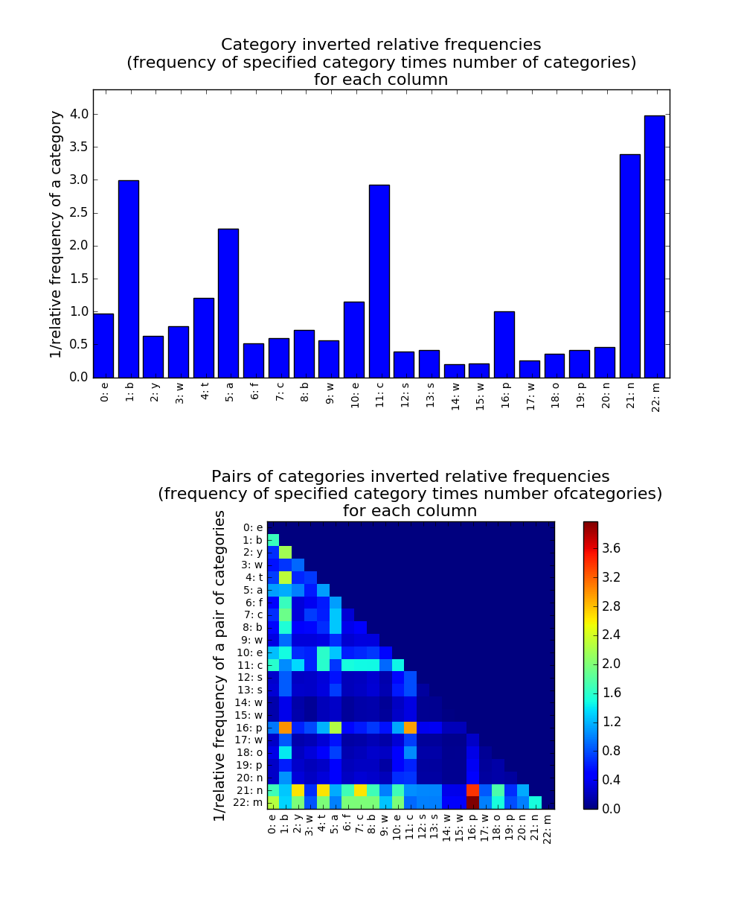

Examples
from pyrite import *
import wget
# Read the mushroom dataset from UC Irvine Dataset Repository
url = 'https://archive.ics.uci.edu/ml/machine-learning-databases/mushroom/agaricus-lepiota.data'
filename = wget.download(url)
mushroom_data = pandas.read_csv(filename,header = None)
# Return anomaly score for every sample in the dataset, sample 50 times and include 100 instances in each sample
mushroom_pyrite = Pyrite(mushroom_data)
score_vec = mushroom_pyrite.score_dataset(50, 100)
# Index of the instance that has the highest anomaly score
anomaly_score_highest = score_vec.argmax()
max_anomaly_score = mushroom_pyrite.score_instance(anomaly_score_highest, 50, 100)
# To check the most important features and pair of features for that instance
print(mushroom_pyrite.get_feature_importance(anomaly_score_highest))
# outputs: most important single feature, and most important feature-pairs, in terms of contribution to the total anomaly score for the instance with the index "anomaly_score_highest"
'''
{'single feature': ([22], 3.9745596868884547), 'pair features': ([(16, 22)], 3.9745596868884547)}
'''
# For further inspection of other features and feature-pairs in terms of contribution to the total anomaly score: *instance_inspect* returns the contribution of each single feature, and feature-pair, in the total anomaly score for a specific instance.
mushroom_pyrite.instance_inspect(anomaly_score_highest, plot=True)
For the example above, instance_inspect produces the following plot:

The figure above, shows a bar plot of the inverse relative frequency for each feature, (heat map for each pair of features). The relative frequency for a feature is the frequency of that feature multiplied by the number of values that feature takes.
The upper part of the figure represents this inverse relative frequency for each single feature. From this plot we can see that the value for the 22nd feature of this particular instance is the least common of all the other feature values.
Similarly, the lower part of the figure shows that the value (p, m) for the feature-pair (16, 22) is less common amongst the dataset thant the other feaure pairs of this instance.